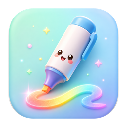

화면 주석, 커서 강조,스포트라이트, 화면 확대까지.발표에 필요한 모든 강조 도구를하나의 앱에 담았어요.
v0.6.0 · 완전 무료 · 회원가입 불필요
하나의 앱에, 발표를 또렷하게 만드는 8가지 기능
회원가입도, 결제도 없어요. 내려받아서 바로 강의에 쓰면 끝!
수업과 강의를 위한 화면 강조 도구 · macOS 13+ / Windows 10·11 · 완전 무료제작 · 경남 황산초등학교 윤희류